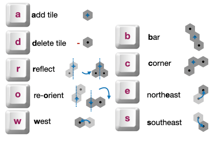

Click to view instructions
Instructions:
You are a one of a team of scientists working on synthetic protein folding.
Your collective goal is to find a procedure to replicate the target protein (shown here as a green pattern).
There are 9 basic actions you can use to achieve this:
You succeed by covering the green pattern exactly. Your additions (shown in gray) can overlap existing each other. Your transformation actions (moving, and rotating and reflecting) affect everything on the board. The red dot indicates how the board is orientated.
Click Act if you are ready to contribute some actions to the current attempt or Reset if you make a mistake. If you do not want to add anything, press Pass. If you want to start over, press Vote Restart.
Demo options